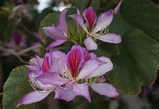

Basonym of Drug
Kanchanara
Main Synonym
- Gandari
- Yugmapatraka
- Swalpa Keshari
- Kovidara
- Karburdara
- Sonapushpa
- Chamarika
Regional Name
- Bengali: Kanchana
- Gujarati: Champakati
- Hindi: Kachnara
- Punjabi: Kulad
- Tamil: Mandare
- Telugu: Devakachanamu
Botanical Name
Bauhinia Variegata
Family
Caesalpinioideae
Classification (Gana)
- Aacharya Charaka: Vamanopaga
- Aacharya Sushruta: Urdhvabhagahara
- Bhavprakash Nighantu: Guduchyadi Varga
External Morphology
5-10 feet high medium deciduous tree
Useful Parts
Bark, Flower
Important Phytoconstituent
- Beta-sitosterol
- Lupeol
- Kempferol
Rasa Panchak
- Rasa: Kashaya
- Guna: Laghu, Snigdha
- Virya: Shita
- Vipaka: Katu
Action
Kaphapittahara
Therapeutic Indication
- Grahi (decreases oversecretion)
- Deepan (appetizer)
- Raktapittahra (useful in bleeding disorders)
- Gandamalanashak (useful to treat lymphadenitis over the neck)
Therapeutic Uses
- Gandamala - Bark powder with Kanji and Sunthi powder is useful in lymphadenitis over the neck.
- Sweta Pradara - Bark decoction is useful to treat leucorrhea with rice gruel.
- Atisara - Decoction with Jeerak powder is useful to treat diarrhea.
Dose
Powder - 3-6 gm, Decoction - 40-80 ml
Formulations
- Kanchanara Guggulu
- Kanchanaradi Kwath
- Kanchanargulika
- Kovidaradi Kashaya
Adverse Effect
Not Known